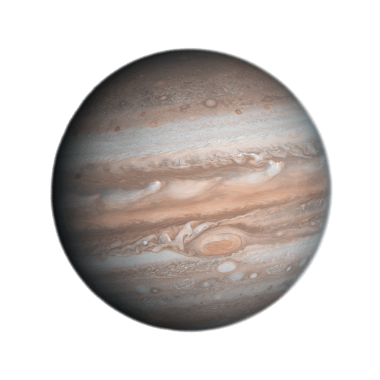

| Planets |
Earth |
Mars |
Venus |
Jupiter |
| Images of The Planets |
 |
 |
 |
 |
| Fact #1 |
Earth has a mass of 5.97(1024kg) |
Mars has a mass of 0.642(1024kg) |
Venus has a mass of 4.97(1024kg) |
Jupiter has a mass of 1898(1024kg) |
| Fact #2 |
Earths Gravity is 9.8(m/s2) |
Mars Gravity is 3.7(m/s2) |
Venus Gravity is 8.9(m/s2) |
Jupiters Gravity is 23.1(m/s2) |
| Fact #3 |
Earth has a diameter of 12,756(km) |
Mars has a diameter of 6792(km) |
Venus has a diameter of 12,104(km) |
Jupiter has a diameter of 142,984(km) |
| Fact #4 |
Earth has an average temperature of 15(C) |
Mars has an average temperature of -65(C) |
Venus has an average temperature of 464(C) |
Jupiter has an average temperature of -110(C) |
| Fact #5 |
Earth has Surface Pressure of 1 Bar |
Mars has Surface Pressure of 0 Bars |
Venus has Surface Pressure of 92 Bars |
Jupiter has Surface Pressure of Unknown |
| Fact #6 |
Earth is 149.6(106km) away from the sun |
Mars is 0.384*(106km) away from the sun |
Venus is 108.2(106km) away from the sun |
Jupiter is 778.5(106km) away from the sun |
| Fact #7 |
Earth has an Orbital Period of 365.2 days |
Mars has an Orbital Period of 27.3 days |
Venus has an Orbital Period of 224.7 days |
Jupiter has an Orbital Period of 4331 days |